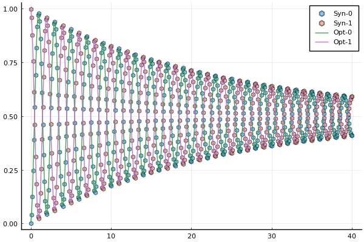
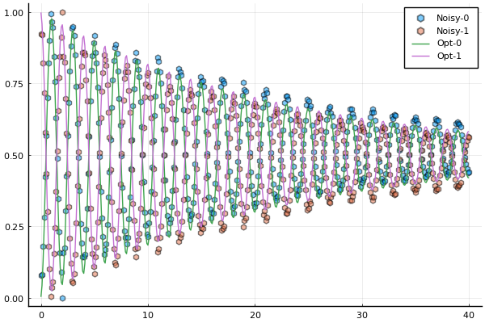

Example 1: characterization of a single qubit Ramsey experiment
In this example, we characterize a single qubit usnig synthetic data of a Ramsey experiment. Specifically, we find the transition frequency $\omega_{01}$ and the dephasing time $T_2=1/\gamma_2$.
We first consider a synthetic data set without noise. The code can be executed by issuing the commands (from the root GLOQ.jl directory) cd("examples");include("SingleQubitRamsey.jl"). The code snippets below are from that file.
Step 1: generate the synthetic data
We first set up the system parameters. The number of states is N_states=2 for the single qubit. freqs, gamma1, gamma2 are vectors holding the transition frequency, the reciprocal of the relaxation time and the reciprocal of the dephasing time. The unit for these parameters are GHz.
# System parameters for a simple two level open quantum system
N_states = 2; # number of states
freqs = [4.1] # transition frequency in GHz
omegas = 2.0*pi.*freqs # change to angular frequency
gamma1 = [1.0/(55.0*GLOQ.GLOQ_MICRO_SEC)] # Reciprocal of relaxation time - T1 (in units of ns)
gamma2 = [1.0/(15.0*GLOQ.GLOQ_MICRO_SEC)] # Reciprocal of dephasing time - T2 (in units of ns)
omr = 2.0*pi*(4.1 - 5.0e-4) # drive frequency
TC = 2.5*17.0 # total control time in ns needed for a Rabi pulse, check the page of experiments for more details Initial state vector is $\mathcal{s}=(1,0)^T+i(0,0)^T$. In other words, the initial density matrix is $\rho=\mathcal{s}\mathcal{s}^\dagger=\left(\begin{matrix} 1 & 0\\ 0 & 0 \end{matrix}\right).$
# Initial state
initial_state = 0
state_u0 = [0.0;0.0]
state_v0 = [0.0;0.0]
state_u0[initial_state+1] = 1.0The duration of the Ramsey experiment is 40.0 $\mu s$, is discretized into 401 equidistant dark times.
# Duration of the Ramsey experiment, largest dark time given in Microseconds
T_Ramsey = 40.0*GLOQ.GLOQ_MICRO_SEC # convert micro-sec to nano-sec
# total number of dark time samples
N_dark_times = 401
t_dark_times = collect(range(0.0, T_Ramsey, length=N_dark_times))Use GLOQ.RamseyForwardSolve to perform a forward solve to generate the synthetic data of the Ramsey experiment.
# Forward solve to generate synthetic data
rho_synthetic_ramsey_u,rho_synthetic_ramsey_v = GLOQ.RamseyForwardSolve(
state_u0,state_v0, # initial values, u for the real part, v for the imaginary part
omegas,omr, # transition frequencies, drive frequency
gamma1,gamma2, # decay and dephasing parameters
initial_state, # initial state
TC,t_dark_times,N_states) # control time, dark time, total number of statesUse GLOQ.get_population to compute the population based on the real part of the density matrix which is flattend and saved as a vector rho_synthetic_ramsey_u.
population_synthetic = GLOQ.get_population(rho_synthetic_ramsey_u)Step 2: define the objective function, initial guess and optimization bounds
Step 2a: define the cost objective function. Here, we use the normalized l2-mismatch.
Suppose the number of dark times in the Ramsey experiment to be $N_{\textrm{Dark}}$. The objective function (loss in the code) is defined as
\[\big|\big| \textrm{Forward Solve Results}-\textrm{Synthetic Data}\big|\big|_2^2/N_{\textrm{Dark}},\]
with $||\cdot||_2$ being the standard $l_2$ norm.
In the objective function loss(p,dummy_parameter), the first argument p saves the target parameter $(\omega_{01},\gamma_2)$ and the second argument dummy_parameter is needed by the optimization interface GalacticOptim which can be simply set up as [].
# Define the loss function for the GalacticOptim
# p: phyiscal parameters:
# p[1] = transition frequency in GHz
# p[2] = gamma2
# dummy_parameter: needed by GalacticOptim, one can just put [] here
function loss(p,dummy_parameter)
_rho_ramsey_u,_rho_ramsey_v = GLOQ.RamseyForwardSolve(state_u0,state_v0,
(2*pi).*[p[1]],omr,
gamma1,[p[2]],#gamma1,gamma2,
initial_state, # initial state
TC,t_dark_times,N_states)
_population_ramsey = GLOQ.get_population(_rho_ramsey_u)
_loss = sum(abs2,_population_ramsey-population_synthetic)/N_dark_times
return _loss
endStep 2b: define a callback function to plot while optimizing
plot_callback = function(p,other_args)
rho_ramsey_u,rho_ramsey_v = GLOQ.RamseyForwardSolve(state_u0,state_v0,
(2*pi).*[p[1]],omr,
gamma1,[p[2]],#gamma1,gamma2,
initial_state, # initial state
TC,t_dark_times,N_states)
population_ramsey = GLOQ.get_population(rho_ramsey_u)
fig=plot(t_dark_times./GLOQ.GLOQ_MICRO_SEC,population_synthetic,label=["Syn-0" "Syn-1"],
line = (:dash,0.0), marker = ([:hex :hex], 5, 0.5) )
plot!(fig,t_dark_times./GLOQ.GLOQ_MICRO_SEC,population_ramsey,label=["Opt-0" "Opt-1"]
)
display(fig)
return false
endStep 2c: Initial guess and bounds for the optimization
p_true = [freqs;gamma2] # values to generate synthetic data
# initial guess for the optimization
p_initial = [freqs .- 0.5e-4;0.9.*gamma2]
# bounds for the optimization
lower_bound = (0.5).*p_true
upper_bound = (1.5).*p_trueStep 3: solve the optimization problem
Step 3a: define the optimization object.
The first argument of GalacticOptim.OptimizationFunction is the objective function, and the second argument specifies how the gradient will be computed. Here, the auto-differentiation package Zygote.jl is used. Other options and settings can be found in GalaticOptim.OptimizationFunction.
# construct optimization object, use Zygote auto-differentiation to compute the gradient
loss_gradient = GalacticOptim.OptimizationFunction(loss, GalacticOptim.AutoZygote())
opt_prob = GalacticOptim.OptimizationProblem(loss_gradient, p_initial,
lb = lower_bound, ub = upper_bound)Step 3b: solve the optimization problem with GalacticOptim.solve.
Here, we use the Optim.jl and NLopt.jl interface of GalacticOptim.jl. Other available optimizer packages and more optimizer specific options are documented in GalacticOptim.jl.
Use the fminbox of Optim.jl as the optimizer.
println("Optim Fminbox(LBFGS) Optimization starts")
@time sol = GalacticOptim.solve(opt_prob ,Fminbox(LBFGS()),
cb = plot_callback,
outer_iterations = 20,
iterations = 10,
show_trace=true,
f_tol = 1e-10,
outer_f_tol = 1e-10)
println("Optim Fminbox(LBFGS) Optimization done")Use the LBFGS of NLopt.jl as the optimizer.
println("NLopt LBFGS Optimization starts")
@time sol_nlopt_LBFGS = GalacticOptim.solve(opt_prob, Opt(:LD_LBFGS,length(p_initial)),
maxiters=200,
cb = plot_callback,
ftol_rel=1e-7)
println("NLopt LBFGS Optimization done")Step 3c: present the result
# present the solutions
println("\nOptimized results: ",sol.u,
"\nLoss: ",sol.minimum,
"\nError: ",sol.u-p_true)Optimized results: [4.099, 6.666666666665127e-5]
Loss: 8.029671826634274e-28
Error: [-0.0009999999999994458, -1.5395670849294163e-17]
Comparison of the synthetic data and the forward solve results of optimized parameter values. Population of different states are presented.
- Syn-0: synthetic data for the energy level 0;
- Syn-1: synthetic data for the energy level 1;
- Opt-0: optimized result for the energy level 0;
- Opt-1: optimized result for the energy level 1.
The same procedure can be applied to characterize the single qubit with noisy synthetic data of a Ramsey experiment.
Check examples/SingleQubitRamseyWithNoise.jl for more details. The corresponding results are as follow.
Optimized results: [4.0999999983533915, 7.229921553726332e-5]
Loss: 0.0015030181815031656
Error: [-1.6466081831367774e-9, 5.632548870596654e-6]
Comparison of the noisy data and the forward solve results of optimized parameter values. Population of different states are presented.
- Noisy-0: noisy data for the energy level 0;
- Noisy-1: noisy data for the energy level 1;
- Opt-0: optimized result for the energy level 0;
- Opt-1: optimized result for the energy level 1.